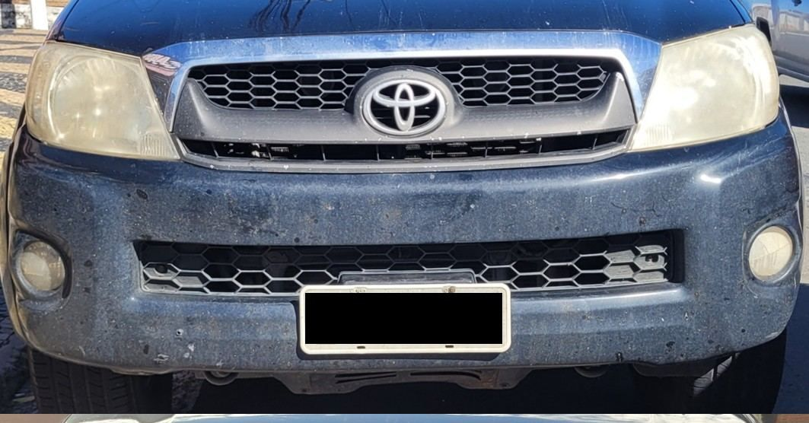
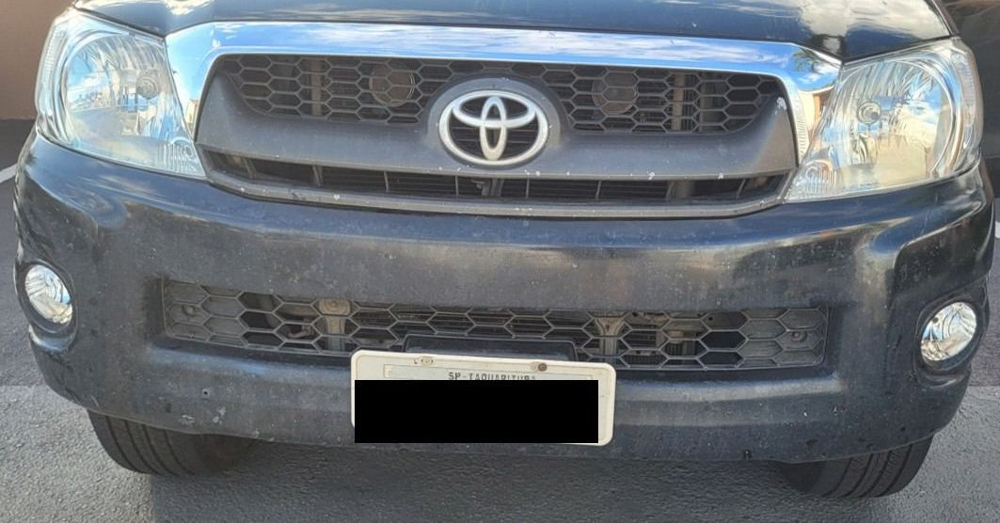
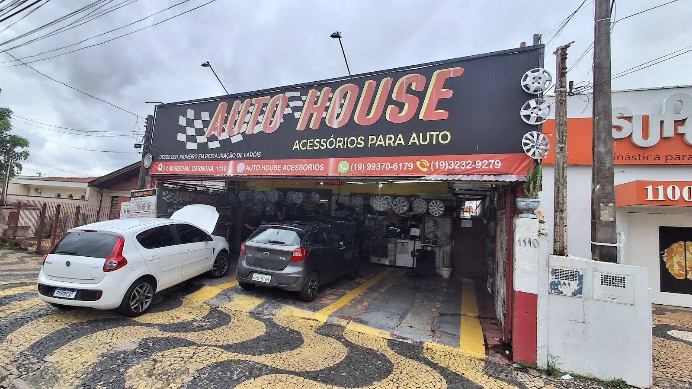

Restauração de faróis
Lixamento, polimento e proteção da lente para tirar o amarelado e devolver a transparência.
Desde 1997 a Auto House restaura faróis opacos e amarelados na Vila Maria. Antes de trocar a peça, traga o carro: na maioria das vezes dá para recuperar a lente, gastando bem menos que numa peça nova.
Simulação: com a lente opaca, a luz se espalha e alcança menos. Restaurada, ela volta a iluminar a pista e as placas.


O sol e o tempo deixam a lente de policarbonato amarelada. Isso não é só estética: a luz perde alcance e o carro pode até reprovar na vistoria.
Lixamento, polimento e proteção da lente para tirar o amarelado e devolver a transparência.
Troca e orientação sobre a lâmpada certa para o seu carro, sem ofuscar ninguém.
Calotas, luzes, cabos e peças de reposição rápida para resolver na hora.

Fácil de achar: é a loja com a bandeira de corrida e a parede de calotas. Tem espaço para parar o carro bem na frente da loja.
Não imaginava que o resultado ficaria tão bom. Deixaram os meus faróis como novos, a um preço justo.Felipe · Google
Não estão preocupados só em vender. A sugestão deles foi mais barata e eficiente do que eu queria fazer nos faróis. Nota 10!Eduardo · Google
Além do serviço ter ficado ótimo, me ajudaram em outra coisa no carro.Resumo · Google
| Segunda a sexta | 8h às 18h |
| Sábado | 8h30 às 12h30 |
| Domingo | Fechado |